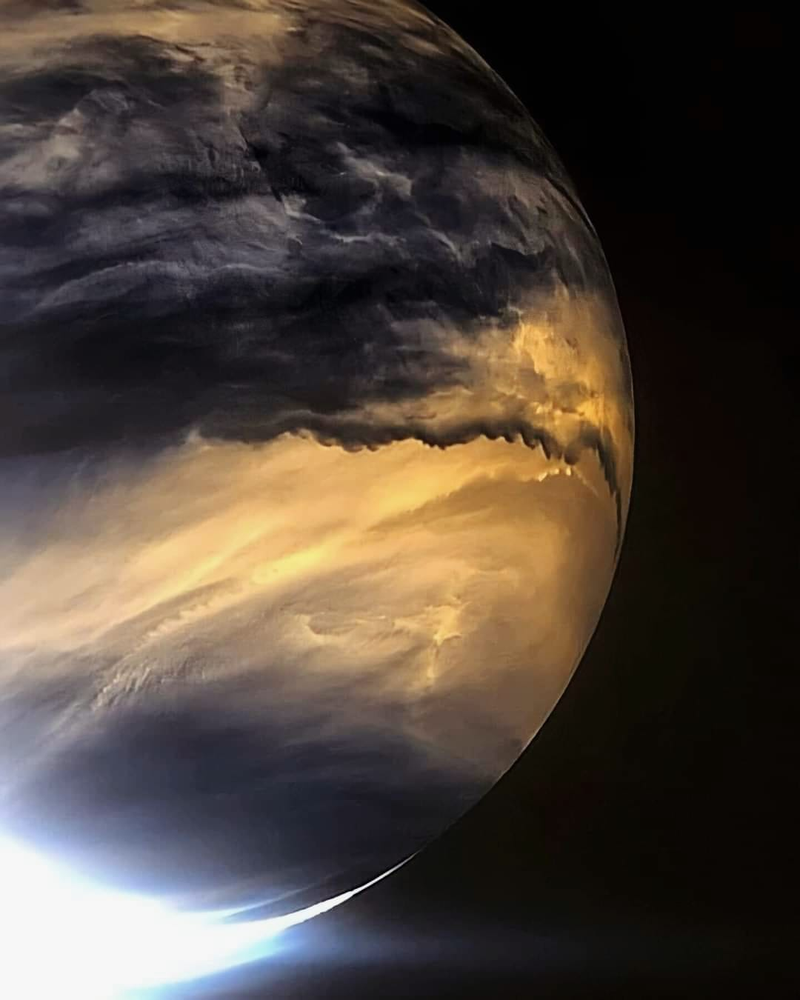
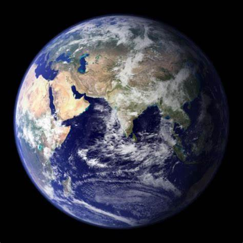
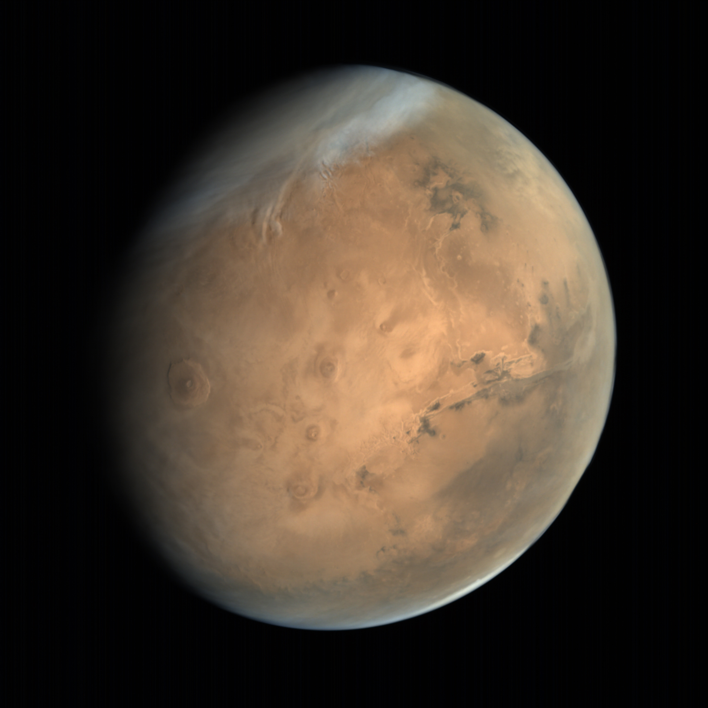
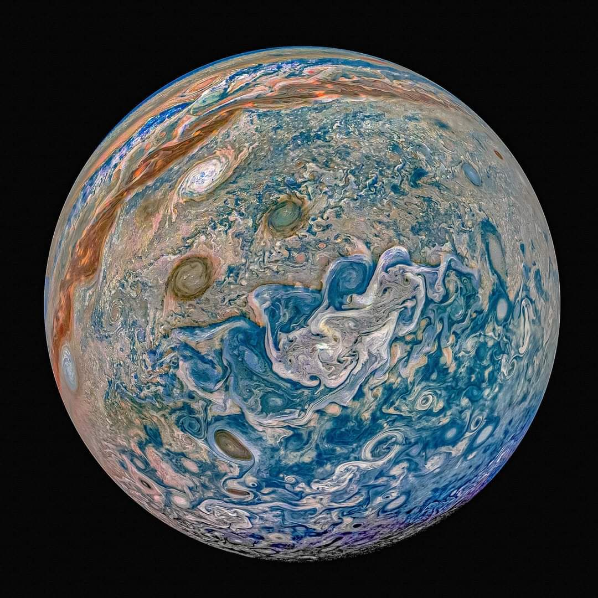
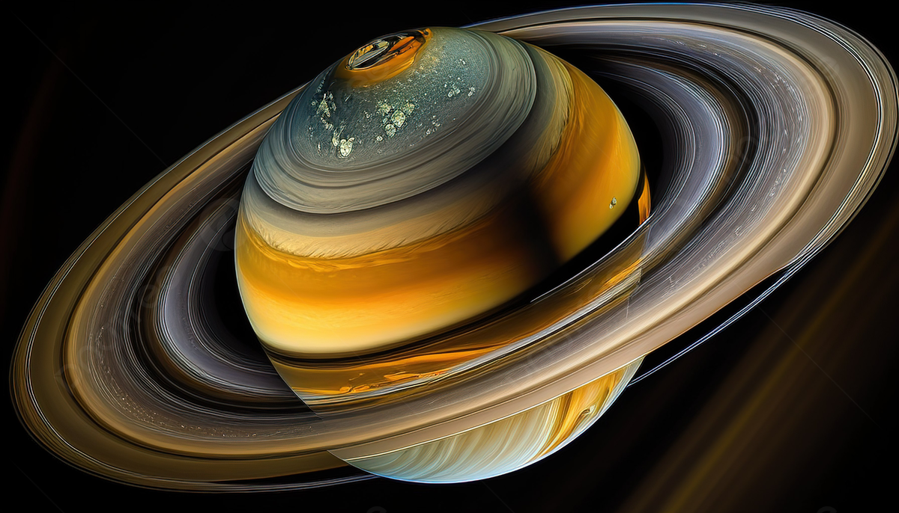
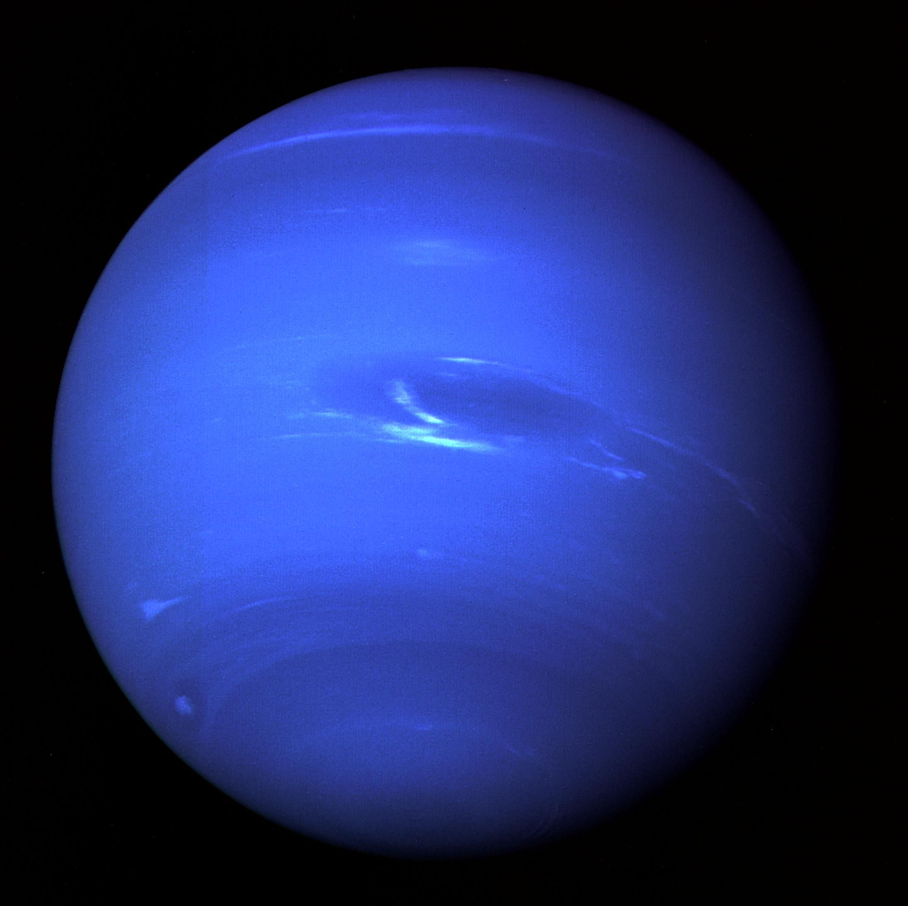

Mercury
Size: equatorial diameter 4,880 KM | Distance from the sun: 58 Million KM | Fun Facts: closest to the sun

Venus
Size: equatorial diameter 12,104 KM | Distance from the sun: 108 Million KM | Fun Facts: same width as the Earth

Earth

Size: equatorial diameter 12,756 KM | Distance from the sun: 147.9 Million KM | Fun Facts: we live here
Mars

Size: equatorial diameter 6,792 KM | Distance from the sun: 277.9 MillionKM | Fun Facts: may have had water
Jupiter

Size: equatorial diameter 142,984 kilometers | Distance from the sun: 471 Million KM | Fun Facts: it has the shortest day in the solar system
Saturn

Size: equatorial diameter 120,536 kilometers | Distance from the sun: 889.8 Million KM | Fun Facts: known for its spectacular icy rings
Uranus
.jpg)
Size: equatorial diameter 51,118 | Distance from the sun: 2.9 Billion KM | Fun Facts: 19x time father than Earth
Neptune

Size: equatorial diameter 49,528 KM | Distance from the sun: 4.5 Billion KM | Fun Facts: it's the 8th planet in our solar system